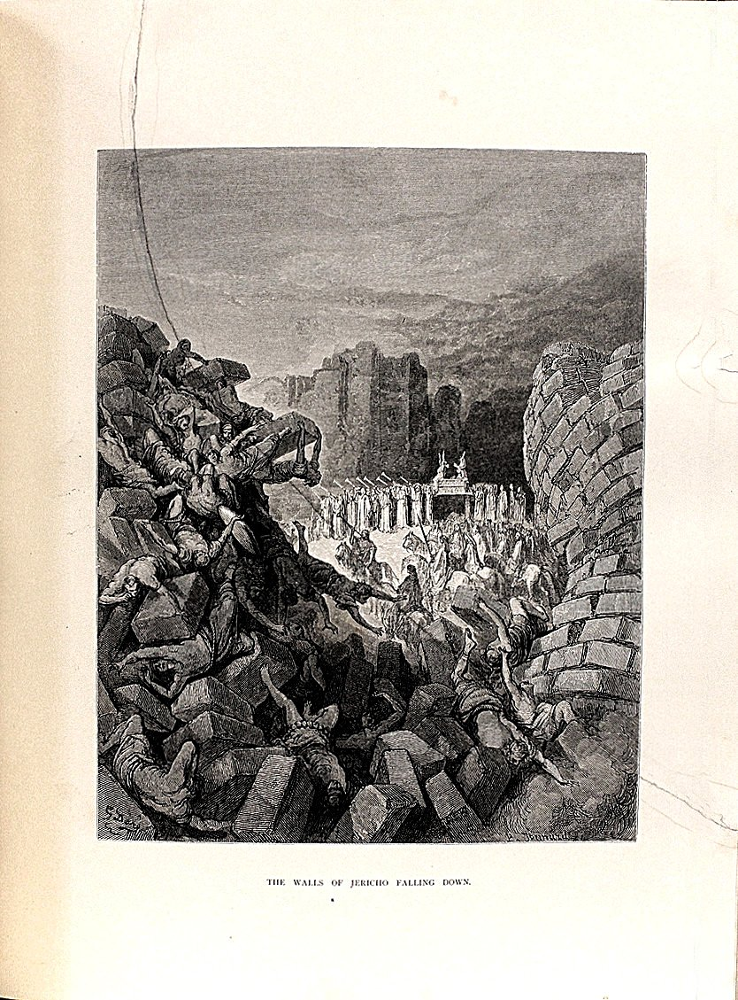

Hebreos 11 — La Traducción Mister

El v. 30, y el suceso más llanamente triunfal de toda la lista: por fe cayeron los muros de Jericó. Doré dibuja el triunfo — los sacerdotes, las trompetas, el arca pasando al fondo.
⚠ Y ahora mire el primer plano. Casi todo el grabado son los aplastados. Hay cuerpos atrapados entre los bloques, tendidos sobre ellos, cayendo con ellos; ocupan más superficie que la procesión. El versículo no los menciona, y el grabador no pudo evitarlos. Es algo justo que colgar sobre este capítulo, que dedica sus ocho versículos finales a lo que se le hizo a la gente.
Dos conexiones que conviene tener. Rahab estaba en esa ciudad — es el versículo siguiente, y este primer plano es aquello de lo que ella y su casa fueron la excepción. Y nueve versículos más abajo el capítulo dice que ninguno de ellos recibió lo prometido. Una imagen de la mayor victoria de la lista sobre un texto que acaba diciendo que los vencedores no llegaron.
La lámina se reproduce tal como está en la página de la Biblia ilustrada en que se imprimió, con sus manchas y todo.
.jpg){kind=link}
Notas del traductor — versículo por versículo
Cada nota explica la decisión de esta traducción y la compara con las versiones de la estantería.
1–3 — ⚠ Dos palabras, y una de ellas decidió un siglo de concilios
La frase más citada de la carta gira sobre dos sustantivos, y los dos están disputados de verdad.
Hypóstasis. Literalmente un estar-debajo: lo que se pone por debajo de algo y lo sostiene. Su abanico va de lo concreto a lo psicológico, y hay que elegir. En el extremo objetivo da «sustancia» — la fe es la realidad de lo esperado: RV pone «la sustancia de las cosas que se esperan». En el extremo subjetivo da confianza, el mantenerse firme dentro de uno: TNM pone «la certeza de que sucederá lo que se espera». Y los papiros comerciales griegos la usan para un título de propiedad: el documento que prueba que posees algo que ahora no puedes ver — una cuarta opción, y probablemente la más aguda.
⚠ Y ahora lo que conviene saber. Hypóstasis aparece cinco veces en el Nuevo Testamento, y una de las otras es Hebreos 1:3, donde el Hijo es el carácter de la hypóstasis de Dios. Esa es la palabra que los concilios del siglo IV convirtieron en el término técnico de persona: una ousia, tres hypóstasis. Así que el sustantivo que un traductor zanja aquí, en un versículo sobre la fe, es el mismo que carga la discusión trinitaria once capítulos antes. ⚠ ¿Y cómo debería decirse en castellano? Un borrador anterior de esta página ponía «el estar-debajo», y el error merece nombrarse: eso es la etimología de la palabra, no su significado. Hypóstasis no significaba «un estar-debajo» para un lector del siglo I, igual que comprender no significa «abarcar con la mano» para nosotros; un calco con guión no comunica nada y parece escrupuloso. Negarse a elegir sigue siendo una elección: sólo traslada la dificultad al lector.
Arriba se lee fundamento: lo que está debajo y sostiene, en castellano corriente. Se escoge en parte por el paralelo: la segunda mitad del versículo es élenchos, palabra jurídica, de modo que «el fundamento de lo que se espera, la prueba de asuntos que no se ven» mantiene las dos mitades en el mismo registro, como hace el griego. Quien prefiera el sentido subjetivo tiene a TNM; quien prefiera el objetivo pleno, a RV.
Élenchos es palabra de tribunal y de filosofía: la prueba que zanja un asunto, el interrogatorio que lo saca a la luz. El método de Sócrates es el elenchos. RV pone «la demostración» y TNM «la prueba convincente» — las dos del lado objetivo, coherentes con lo que cada una hizo con la primera palabra.
4–7 — El verbo que cerrará el capítulo, y la palabra detrás de «mártir»
⚠ Primero el v. 2, donde el inglés tiene una trampa que el castellano esquiva. Hoi presbýteroi es el comparativo de «viejo», y en el Nuevo Testamento hace doble servicio: nombra a los mayores, los antepasados, y nombra un oficio, los ancianos de una congregación. Aquí es claramente lo primero: los referentes son la gente que la lista va a enumerar, Abel y Enoc y Noé y Abrahán. Pero «the elders», que es lo que ponen la KJV y la ASV, apunta en inglés directamente al cargo eclesial, y el lector aterriza en el sentido equivocado. RV lo resuelve bien con «los antiguos», y TNM con «los hombres de la antigüedad». El castellano tiene aquí la ventaja de que «antiguos» no significa un cargo.
Martyréo, dar testimonio, recorre la apertura: de los antiguos se dio testimonio (v. 2), de Abel se dio testimonio de que era justo, dando Dios testimonio sobre sus ofrendas (v. 4), de Enoc se ha dado testimonio (v. 5). Aparece cinco veces en el capítulo, y la quinta es el v. 39, lo último que se dice de todos ellos. Enmarca la lista.
⚠ Y es la raíz de mártir. Un capítulo construido sobre el verbo «testificar» termina con gente aserrada en dos, en una lengua donde la palabra para testigo llegó a ser la palabra para quien muere por serlo.
8–12 — ⚠ ¿De quién es la fe del v. 11?
Esta es la cuestión textual más aguda del capítulo, y la traducción de arriba se aparta de todas las versiones de la estantería, así que conviene decirlo con claridad.
El texto base que esta biblioteca traduce imprime autēi Sarrai en dativo — «junto con la misma Sara» —, lo que hace de Abrahán el sujeto: por fe, con Sara, recibió poder. La mayoría de las ediciones críticas imprimen el nominativo, haciendo sujeto a Sara, y NA28 añade steira, «estéril».
Toda la estantería toma el nominativo. RV pone «también la misma Sara, siendo estéril, recibió fuerza» — y nótese que RV lleva además el añadido de NA28 — y TNM pone «Sara también recibió poder».
⚠ ¿Y qué lo decide? No la teología, sino una frase sobre anatomía. El poder recibido es eis katabolēn spermatos, para la siembra o depósito de simiente, que en el uso griego describe la parte del padre, no la de la madre. Ese es el argumento real a favor del dativo. En contra: Sara es la afirmación más llamativa, el capítulo es una lista de creyentes con nombre, y en Génesis ella se ríe de la promesa, lo que hace su inclusión aquí intencionada y no obvia.
Aquí no se vota. El texto sigue su base y deja la alternativa impresa, y quien prefiera la otra lectura tiene de su parte todas las versiones publicadas.
13–16 — Residentes foráneos, y el final anunciado a mitad
«Extranjeros y peregrinos» es xénoi kai parepidēmoi: un forastero y un residente foráneo, y lo segundo es un estatus jurídico — alguien que vive largo tiempo en un sitio sin pertenecer a él, con las cargas fiscales y sin la ciudadanía.
Nótese que el v. 13 ya dice lo que dirá el v. 39: murieron sin haber recibido las promesas. El capítulo enuncia su final dos veces, una en medio y otra al cierre, y la de en medio suele saltarse.
17–22 — Un tiempo verbal que no se resuelve, y un bastón
El «ha ofrecido» del v. 17 es perfecto — acto acabado con efectos en pie — y va seguido inmediatamente de un imperfecto, «ofrecía». El griego sostiene el sacrificio como terminado y en curso a la vez.
⚠ El v. 21 tiene a Jacob adorando «sobre el extremo de su bastón», que es la lectura de la Septuaginta en Génesis 47:31 — el hebreo de allí tiene mittah, cama, y el griego leyó las mismas consonantes como matteh, bastón. El autor de Hebreos cita la Biblia griega, y la diferencia es una vocal.
23–31 — Moisés, y quién cierra la lista
El asteion del v. 23 no es «hermoso» en general sino algo como bien formado, presentable — literalmente «de ciudad».
⚠ Y nótese quién cierra la lista de individuos con nombre: Rahab la prostituta (v. 31), con el epíteto sin suavizar en ninguna versión de la estantería, y colocada justo después de los muros de Jericó. La lista va Abel, Enoc, Noé, Abrahán, los patriarcas, Moisés — y termina en una trabajadora sexual cananea que escondió a los espías. El capítulo no comenta la disposición.
32–38 — ⚠ Dos palabras únicas, y una tercera que quizá sobra
El capítulo gira en el v. 32 de una lista de victorias a una lista de lo que se le hizo a la gente, y el vocabulario gira con él.
Etympanisthēsan (v. 35) aparece una sola vez en el Nuevo Testamento. Está construida sobre tímpanon, un tambor: ser estirado sobre un bastidor y golpeado, como se tensa un parche. TNM pone el general «torturados», igual que la KJV y la ASV inglesas. Sólo RV conserva la imagen: «unos fueron estirados». Es la mejor traducción de esta palabra en toda la estantería, en cualquier idioma.
Epristhēsan (v. 37) también aparece una sola vez: aserrados en dos. Es casi con seguridad una alusión a la tradición — recogida en el Martirio de Isaías, no en la Biblia hebrea — de que a Isaías lo ejecutaron así. RV y TNM lo conservan.
⚠ Y una tercera palabra del mismo versículo que el texto base de esta traducción no tiene. Casi todas las ediciones imprimen epeirasthēsan, «fueron tentados» — y lleva siglos incomodando, porque está en una lista de lapidaciones y aserramientos y muertes, donde ser probado es un error de categoría. Las ediciones ni siquiera coinciden en dónde ponerla. Muchos sospechan un accidente de copia a partir de eprēsthēsan, «fueron quemados». RV pone «tentados» y TNM «puestos a prueba». Arriba se omite, siguiendo el texto base, y se dice aquí.
39–40 — ⚠ Lo importante del capítulo es que no termina
Todo lo anterior construye un argumento que los dos últimos versículos invierten. Martyréo vuelve por quinta y última vez — de todos estos se dio testimonio por su fe — y entonces: no recibieron la promesa. La lista de triunfos cierra en negativo.
Y la última palabra es teleiōthōsin, de teleioō, completar, que aparece sólo ahí en el capítulo, en su cláusula final: Dios previó algo mejor para que no fueran completados aparte de nosotros.
⚠ Leído llanamente, es una afirmación extraña y generosa, y no conviene alisarla: la gente de esta lista no se presenta como quien ya llegó, sino como quien espera, y como incapaz de quedar terminada sin los lectores de la carta, que aún no habían hecho nada. El capítulo más famoso de la Biblia sobre la fe termina diciendo que sus propios héroes no han acabado.
Patrones que conviene retener.
⚠ El capítulo tiene un esqueleto contable. Pistei — «por fe» — abre exactamente dieciocho versículos: 3, 4, 5, 7, 8, 9, 11, 17, 20, 21, 22, 23, 24, 27, 28, 29, 30 y 31. Arriba se conservan los dieciocho en la misma posición y con las mismas palabras. Los huecos también importan: la serie se rompe en 12-16 y otra vez tras el 31, y las dos veces el capítulo deja de enumerar y se pone a argumentar.
⚠ Y un segundo hilo lo enmarca. Martyréo, dar testimonio, aparece cinco veces: los antiguos (v. 2), Abel dos veces (v. 4), Enoc (v. 5) — y luego el v. 39, lo último que se dice de todos. Es la raíz de mártir, en un capítulo que acaba con gente aserrada en dos.
⚠ El v. 1 gira sobre una palabra que decidió un siglo de concilios. Hypóstasis es literalmente un estar-debajo, y su abanico obliga a elegir: «sustancia» (RV) en el extremo objetivo, «certeza» (TNM) en el subjetivo, y en los papiros comerciales un título de propiedad: el documento que prueba que posees lo que no puedes ver. Aparece cinco veces en el Nuevo Testamento, y una de ellas es Hebreos 1:3, donde el Hijo es la impronta de la hypóstasis de Dios — la palabra que los concilios del siglo IV hicieron término técnico de persona. Arriba se lee fundamento: lo que está debajo y sostiene — escogido en parte por el paralelo, porque la segunda mitad del versículo es una palabra jurídica. ⚠ Un borrador anterior ponía «el estar-debajo», que era la etimología de la palabra y no su significado.
⚠ ¿De quién es la fe del v. 11? El texto base imprime el dativo — «junto con la misma Sara» —, lo que hace sujeto a Abrahán; la mayoría de las ediciones imprimen el nominativo, haciendo sujeto a Sara, y todas las versiones las siguen. Lo que lo decide no es la teología sino una frase sobre anatomía: el poder es para la siembra de simiente, que en griego describe la parte del padre. En contra, Sara es la afirmación más llamativa y en Génesis ella se ríe de la promesa. Aquí no se vota.
⚠ Ventaja del español. El etympanisthēsan del v. 35 está construido sobre tímpanon, un tambor: ser estirado sobre un bastidor y golpeado. Sólo RV conserva la imagen, con «estirados»; todas las demás versiones, en inglés y en español, ponen el genérico «torturados». Es la mejor traducción de esa palabra en toda la estantería.
Decisiones. «Estar-debajo» y «prueba» en el v. 1. «Residentes foráneos» para parepidēmoi en el v. 13, que es un estatus jurídico y no un estado de ánimo. «Estirados en el tambor» en el v. 35. Y «artesano y hacedor» en el v. 10, donde la segunda palabra es dēmiourgos, la de Platón.
⚠ Y el final, que es lo importante. El capítulo más famoso de la Biblia sobre la fe cierra en negativo: no recibieron la promesa. Su última palabra es teleioō, completar — usada sólo ahí en el capítulo —, y la afirmación es que esta gente no puede quedar terminada aparte de nosotros. La lista de héroes acaba diciendo que los héroes no han acabado. El v. 13 dice lo mismo a mitad, y suele saltarse.
⚠ Sobre el orden: Hebreos figura en estas páginas en los capítulos 1 y 11 — un salto deliberado al capítulo más buscado de la carta. El hilo secuencial sigue intacto: el siguiente en orden es Hebreos 2, que es adonde apunta la navegación de arriba.